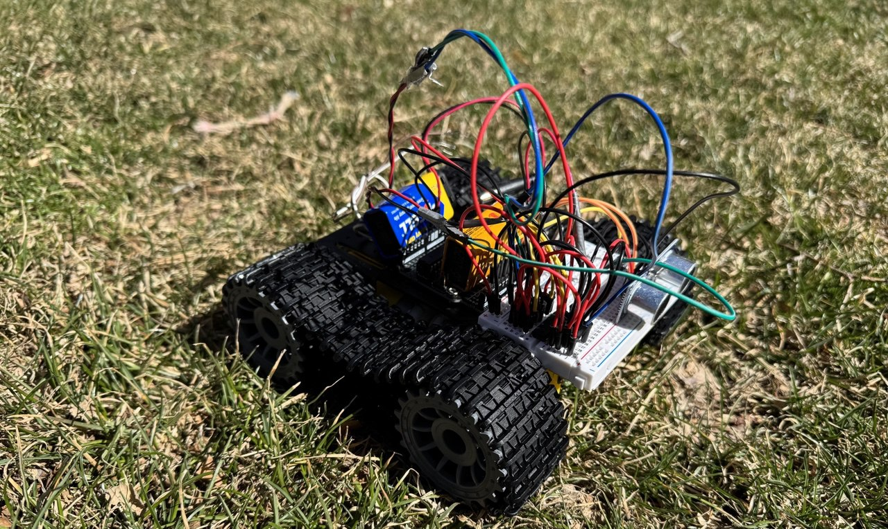

Robotics, form, and function
Built as a working prototype, the mower combines structural design, motion planning constraints, and attention to user safety and legibility.
Robotics · Prototyping · Systems thinking